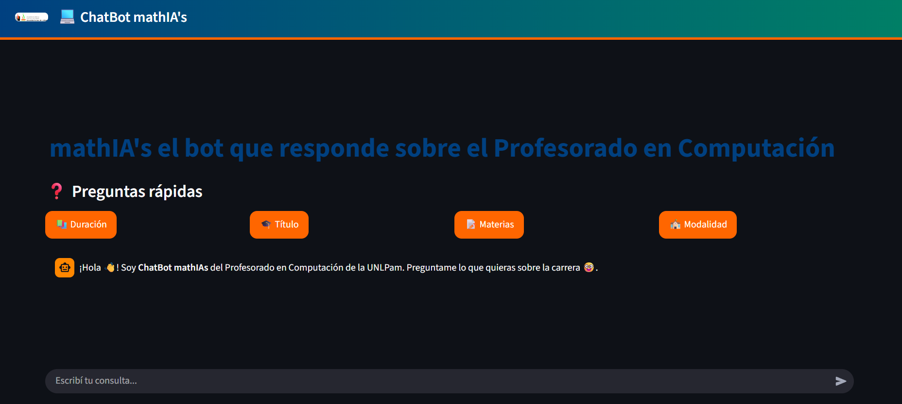
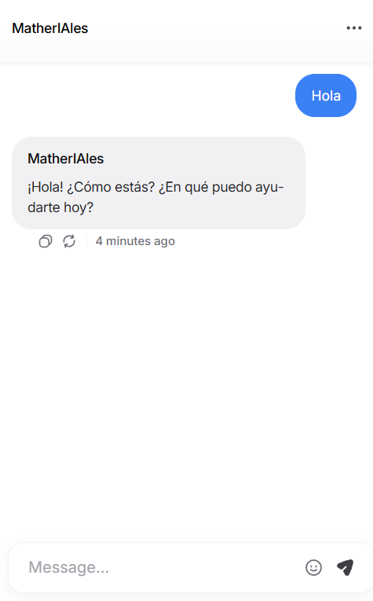
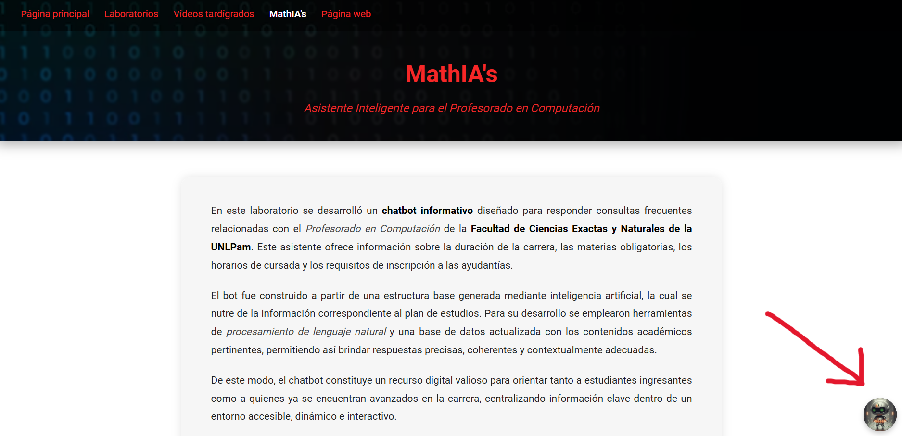

En este laboratorio se desarrolló un chatbot informativo diseñado para responder consultas frecuentes relacionadas con el Profesorado en Computación de la Facultad de Ciencias Exactas y Naturales de la UNLPam. Este asistente ofrece información sobre la duración de la carrera, las materias obligatorias, los horarios de cursada y los requisitos de inscripción a las ayudantías.
El bot fue construido a partir de una estructura base generada mediante inteligencia artificial, la cual se nutre de la información correspondiente al plan de estudios. Para su desarrollo se emplearon herramientas de procesamiento de lenguaje natural y una base de datos actualizada con los contenidos académicos pertinentes, permitiendo así brindar respuestas precisas, coherentes y contextualmente adecuadas.
De este modo, el chatbot constituye un recurso digital valioso para orientar tanto a estudiantes ingresantes como a quienes ya se encuentran avanzados en la carrera, centralizando información clave dentro de un entorno accesible, dinámico e interactivo.
Hecho con Python (Streamlit)
"Hecho con otra IA de base
En este caso se puede observar que en nuestra esquina inferior derecha, podemos hacer uso del bot
